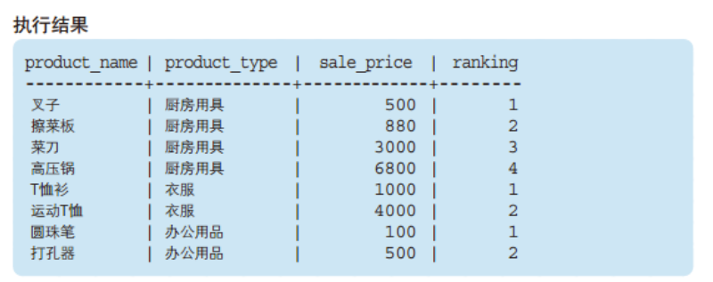
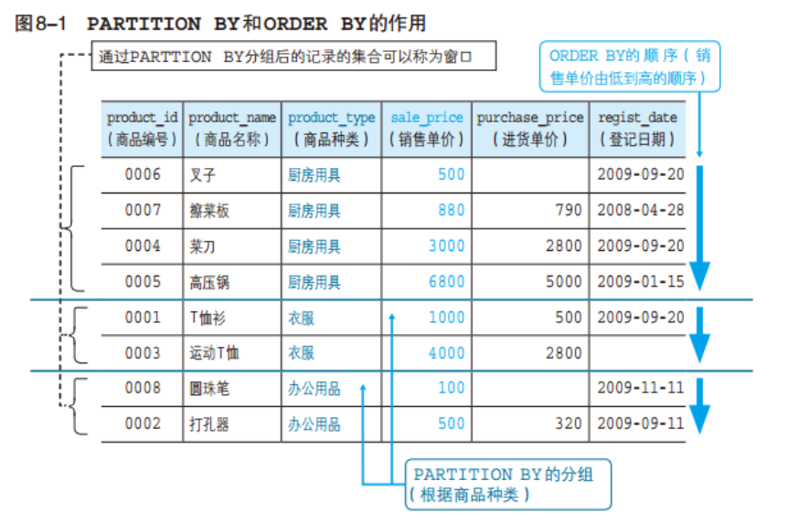
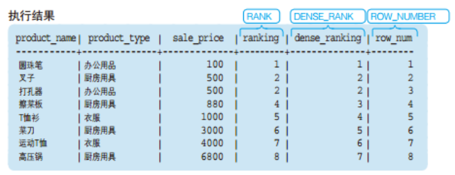
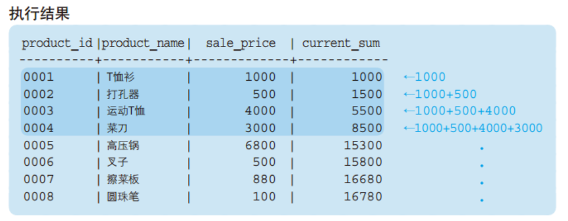
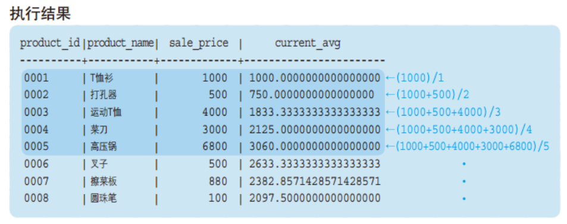
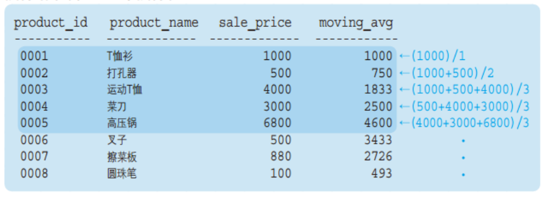
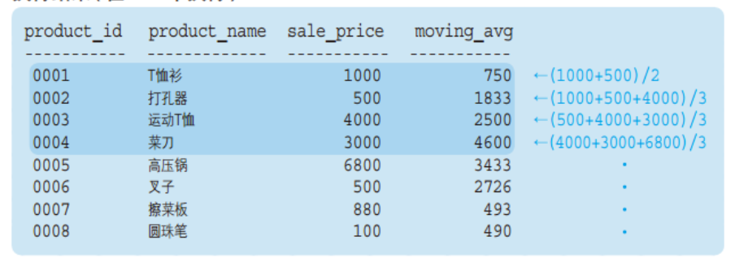
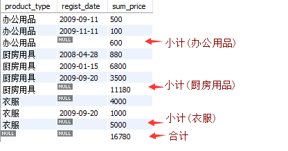
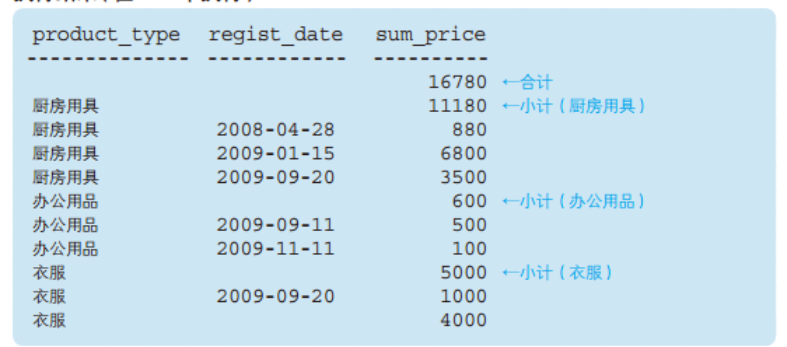
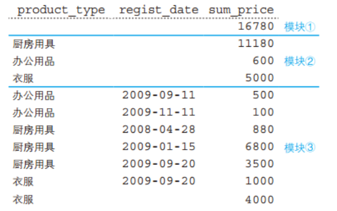

5.1 窗口函数
5.1.1 窗口函数概念及基本的使用方法
窗口函数也称为OLAP函数。OLAP 是OnLine AnalyticalProcessing 的简称，意思是对数据库数据进行实时分析处理。
为了便于理解，称之为窗口函数。常规的SELECT语句都是对整张表进行查询，而窗口函数可以让我们有选择的去某一部分数据进行汇总、计算和排序。
窗口函数的通用形式：
<窗口函数> OVER ([PARTITION BY <列名>]
ORDER BY <排序用列名>)
*[]中的内容可以省略。
窗口函数最关键的是搞明白关键字PARTITON BY和ORDER BY的作用。
PARTITON BY是用来分组，即选择要看哪个窗口，类似于GROUP BY 子句的分组功能，但是PARTITION BY 子句并不具备GROUP BY 子句的汇总功能，并不会改变原始表中记录的行数。 ORDER BY是用来排序，即决定窗口内，是按那种规则(字段)来排序的。举个栗子:
SELECT product_name
,product_type
,sale_price
,RANK() OVER (PARTITION BY product_type
ORDER BY sale_price) AS ranking
FROM product
得到的结果是:

我们先忽略生成的新列 - [ranking]， 看下原始数据在PARTITION BY 和 ORDER BY 关键字的作用下发生了什么变化。
PARTITION BY 能够设定窗口对象范围。本例中，为了按照商品种类进行排序，我们指定了product_type。即一个商品种类就是一个小的"窗口"。
ORDER BY 能够指定按照哪一列、何种顺序进行排序。为了按照销售单价的升序进行排列，我们指定了sale_price。此外，窗口函数中的ORDER BY与SELECT语句末尾的ORDER BY一样，可以通过关键字ASC/DESC来指定升序/降序。省略该关键字时会默认按照ASC，也就是
升序进行排序。本例中就省略了上述关键字 。

5.2 窗口函数种类
大致来说，窗口函数可以分为两类。
一是 将SUM、MAX、MIN等聚合函数用在窗口函数中
二是 RANK、DENSE_RANK等排序用的专用窗口函数
5.2.1 专用窗口函数
- RANK函数
计算排序时，如果存在相同位次的记录，则会跳过之后的位次。
例）有 3 条记录排在第 1 位时：1 位、1 位、1 位、4 位……
- DENSE_RANK函数
同样是计算排序，即使存在相同位次的记录，也不会跳过之后的位次。
例）有 3 条记录排在第 1 位时：1 位、1 位、1 位、2 位……
- ROW_NUMBER函数
赋予唯一的连续位次。
例）有 3 条记录排在第 1 位时：1 位、2 位、3 位、4 位
运行以下代码：
SELECT product_name
,product_type
,sale_price
,RANK() OVER (ORDER BY sale_price) AS ranking
,DENSE_RANK() OVER (ORDER BY sale_price) AS dense_ranking
,ROW_NUMBER() OVER (ORDER BY sale_price) AS row_num
FROM product

5.2.2 聚合函数在窗口函数上的使用
聚合函数在开窗函数中的使用方法和之前的专用窗口函数一样，只是出来的结果是一个累计的聚合函数值。
运行以下代码：
SELECT product_id
,product_name
,sale_price
,SUM(sale_price) OVER (ORDER BY product_id) AS current_sum
,AVG(sale_price) OVER (ORDER BY product_id) AS current_avg
FROM product;


可以看出，聚合函数结果是，按我们指定的排序，这里是product_id，当前所在行及之前所有的行的合计或均值。即累计到当前行的聚合。
5.3 窗口函数的的应用 - 计算移动平均
在上面提到，聚合函数在窗口函数使用时，计算的是累积到当前行的所有的数据的聚合。 实际上，还可以指定更加详细的汇总范围。该汇总范围成为框架(frame)。
语法
<窗口函数> OVER (ORDER BY <排序用列名>
ROWS n PRECEDING )
<窗口函数> OVER (ORDER BY <排序用列名>
ROWS BETWEEN n PRECEDING AND n FOLLOWING)
PRECEDING（“之前”）， 将框架指定为 “截止到之前 n 行”，加上自身行
FOLLOWING（“之后”）， 将框架指定为 “截止到之后 n 行”，加上自身行
BETWEEN 1 PRECEDING AND 1 FOLLOWING，将框架指定为 “之前1行” + “之后1行” + “自身”
执行以下代码：
SELECT product_id
,product_name
,sale_price
,AVG(sale_price) OVER (ORDER BY product_id
ROWS 2 PRECEDING) AS moving_avg
,AVG(sale_price) OVER (ORDER BY product_id
ROWS BETWEEN 1 PRECEDING
AND 1 FOLLOWING) AS moving_avg
FROM product
注意观察框架的范围。
ROWS 2 PRECEDING：

ROWS BETWEEN 1 PRECEDING AND 1 FOLLOWING：

5.3.1 窗口函数适用范围和注意事项
- 原则上，窗口函数只能在SELECT子句中使用。
- 窗口函数OVER 中的ORDER BY 子句并不会影响最终结果的排序。其只是用来决定窗口函数按何种顺序计算。
5.4 GROUPING运算符
5.4.1 ROLLUP - 计算合计及小计
常规的GROUP BY 只能得到每个分类的小计，有时候还需要计算分类的合计，可以用 ROLLUP关键字。
SELECT product_type
,regist_date
,SUM(sale_price) AS sum_price
FROM product
GROUP BY product_type, regist_date WITH ROLLUP
得到的结果为：


这里ROLLUP 对product_type, regist_date两列进行合计汇总。结果实际上有三层聚合，如下图 模块3是常规的 GROUP BY 的结果，需要注意的是衣服 有个注册日期为空的，这是本来数据就存在日期为空的，不是对衣服类别的合计； 模块2和1是 ROLLUP 带来的合计，模块2是对产品种类的合计，模块1是对全部数据的总计。
ROLLUP 可以对多列进行汇总求小计和合计。

练习题
5.1
请说出针对本章中使用的 product（商品）表执行如下 SELECT 语句所能得到的结果。
SELECT product_id
,product_name
,sale_price
,MAX(sale_price) OVER (ORDER BY product_id) AS Current_max_price
FROM product
5.2
继续使用product表，计算出按照登记日期（regist_date）升序进行排列的各日期的销售单价（sale_price）的总额。排序是需要将登记日期为NULL 的“运动 T 恤”记录排在第 1 位（也就是将其看作比其他日期都早）
5.3
思考题
① 窗口函数不指定PARTITION BY的效果是什么？
② 为什么说窗口函数只能在SELECT子句中使用？实际上，在ORDER BY 子句使用系统并不会报错。